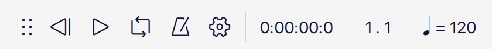
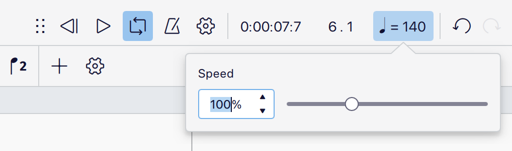

Playback controls
Overview

The playback toolbar
Basic playback functions are accessed from the Playback toolbar at the top right of the app window.
The buttons from left to right are:
- Rewind: Starts playback from the start of the score (or looped section)
- Play: Starts and stops playback
- Toggle loop playback: Plays back a selected range of music
- Metronome: Toggles metronome tick on and off
- Playback settings: Provides access to various playback controls
- Playback position counters: Shows the time, measure, and beat of the playback cursor
- Playback speed: Allows you to see and control the playback speed
The playback panel can be undocked and repositioned by clicking and dragging the dock handle to the left of the Rewind button.
Playback controls
Play
To start playback:
- Press the Play button, or press Space
- (Optional) Click on a note or rest to establish the playback starting point
To stop playback, press the Play button during playback (It will show a 'pause' icon), or press Space.
If no selection is made before pressing Play, playback will commence at the start of the score, or from the location at which it was previously stopped.
During playback, all instruments will be heard, according to what is muted/soloed in the mixer. To quickly play back a specific stave or range of staves without using the solo/mute controls in the mixer:
- Select a measure that you want to start from (by clicking a blank space within that measure)
- (Optional) Hold Shift and click a measure on a different stave to create a range selection
- Press the Play button, or press Space
MuseScore Studio will now play back only the selected instruments.
Rewind
Press the Rewind button to start playback from the beginning of the score.
If a loop is set, pressing Rewind will start playback from the beginning of the loop.
Loop
To loop playback over a section of music:
- Select a range in the score that contains the section of music you want to play back
- Click Toggle loop playback
- Press Play
Flag markers will appear at the start and end of the looped section. To clear the looped section markers, press the Toggle loop payback button again.

The undocked playback panel, with start and end loop markers shown around measures 6 and 7.
Metronome
To hear metronome ticks during playback, click the Metronome button.
Metronome ticks will be heard during playback when the Metronome button is coloured. To switch off the metronome, press the Metronome button again so that the coloured button background is no longer visible.
You can control the volume of the metronome, as well as the sound it uses, in the Mixer.
When the Metronome is on, metronome ticks will be included in your exported audio file.
Playback position counters
The current playback position is shown by two counters to the right of the playback controls. One shows the position in terms of time elapsed, the other in measures and beats.
To jump to a timestamp, measure or beat manually:
- Click a counter
- Enter a number
- Press Esc or click outside of the counter field to clear the selection
- Press Play
Playback speed
The Playback speed button shows the relative tempo at the given position of the playback cursor. The tempo is shown in quarter-note (crotchet) beats, relative to whatever tempo is notated in the score.
For example, if a tempo mark of ♩= 80 is added to the start of measure 5, then the Playback speed button will also show♩= 80 when the playback cursor reaches the start of measure 5.
Alternatively, if a tempo mark of ♪=100 is added to the start of measure 6, then the Playback speed button will display ♩= 50 when the playback cursor reaches the start of measure 6.
The Playback speed button also takes into account tempo changes, and breaths and pauses. This means you'll see the number increase during an accelerando, and decrease during a rallentando or when the playback cursor reaches a fermata.
MuseScore Studio gives you the ability to control the playback speed of the whole score, independently of all notated tempo markings. This allows you to play back the score faster or slower without having to add or modify notated tempo markings.
To control the playback speed of the score independently of notated tempo markings:
- Click the Playback speed button
- In the popup that appears, use your mouse to move the slider control left or right, or
- Type a number into the text field to the left of the slider control

The playback speed popup can be opened by clicking the playback speed button
The playback speed is set as a percentage of the default tempo (♩= 120), or whatever tempo marking prevails at the position of the playback cursor during playback.
When you change the playback speed, MuseScore Studio maintains the relationship between all notated tempo markings, tempo changes, and breaths and pauses. This means that all notated tempi, and their relationship to other markings – including tempo changes, and breaths and pauses – stays the same, but is heard faster or slower depending on the playback speed you've chosen.
To permanently display the playback speed controls, undock the playback panel by clicking and dragging the dock handle to the left of the Rewind button.
Playback settings
Click the Playback settings button to control various aspects of how playback works in MuseScore Studio. These settings can be checked or unchecked according to your requirements.
We'll look at each setting in turn.
Enable MIDI input
When this option is checked, you'll be able to hear playback from, and input notation using a connected MIDI device (such as a keyboard or drum machine). Uncheck this option if you don't want to use your MIDI device in MuseScore Studio (For example, when using it for audition purposes only in another background application). See Working with Midi for details.
MIDI input pitch
There are two options in the MIDI input pitch sub-menu that allow you to control whether notation inputted using a MIDI device is entered at either the written pitch or sounding pitch for transposing instruments.
Note that this setting only makes a difference when the Concert pitch toggle is unchecked. When entering notation in concert pitch, all notes played on a MIDI device will be entered at their sounding pitch.
- When Written pitch is selected, notes played on a MIDI device will be inputted at the stave position that corresponds to the note played.
- For example, when inputting notation for a Trumpet in B♭, a C played on the MIDI device will be inputted as a C, and will sound like a B♭.
- When Sounding pitch is selected, notes played on a MIDI device will be entered at the sounding pitch that corresponds to the pitch of the note played.
- For example, when inputting notation for a Trumpet in B♭, a C played on the MIDI device will be inputted as a D, and will sound like a C.
Play repeats
When this option is checked, all sections of music contained within repeat markings will be repeated during playback. Uncheck this option if you want to ignore repeat markings during playback.
Play chord symbols
When this option is checked, all chord symbols will be played during playback. Uncheck this option if you want ignore chord symbols during playback .
Hear playback when editing
When this option is checked, you'll be able to hear a preview sound for every note you input, or select and modify. Uncheck this option to input, select, or modify notes without hearing a preview of their sound.
Pan score automatically
When this option is checked, the position of the score will be adjusted during playback and editing. Uncheck this option if you want the score position to remain stationary.
Set loop markers
To manually set the start of a looped section:
- Select a measure, note, or rest
- Click Playback settings
- Select Set loop marker left
To manually set the end of a looped section:
- Select a measure, note, or rest
- Click Playback settings
- Select Set loop marker right
Dedicated buttons for start and end loop markers can also be permanently visible in the Playback toolbar when it is in it is undocked.
External links
Metronome tick demo score file https://musescore.org/en/node/357722#comment-1220561